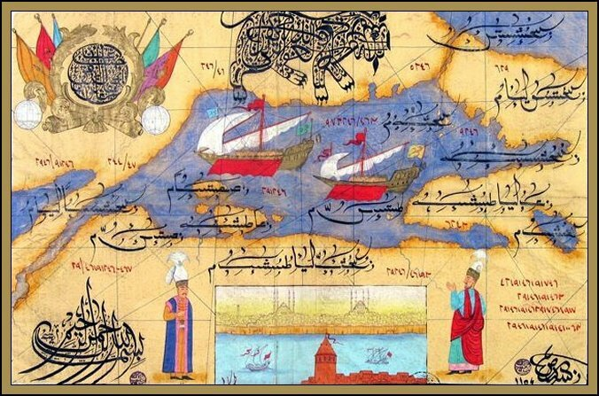

 <div style="text-align:left"><span style="font-size: medium;">В комментарии к одному из недавних постов мой друг <span class="ljuser  i-ljuser  i-ljuser-type-P     " data-ljuser="muitininkas" lj:user="muitininkas"><a href="https://muitininkas.livejournal.com/profile/" target="_self" class="i-ljuser-profile"></a><a href="https://muitininkas.livejournal.com/" class="i-ljuser-username" target="_self"><b>muitininkas</b></a></span> заинтересовался каллиграфическими надписями на турецких миниатюрах, &#34;где в рисунок галеры были вписаны некие изречения&#34; и просил выложить другие подобные шедевры арабской вязи. Тогда у меня под рукой ничего не оказалось, а вот сейчас попалась интересная миниатюра, которую я нашел у <b><i>zh-cn</i></b> на фейсбуке. С удовольствием выкладываю ее, тем более что в следующем нашем рассказе речь пойдет как раз о турецких галерах и галиотах.<br/><br/><div style="text-align:center"></div></span></div> 